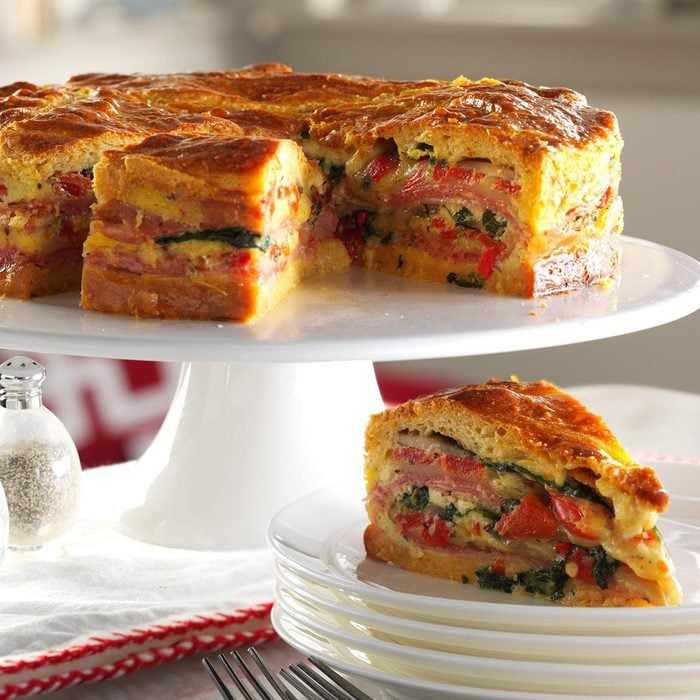

Italian Brunch Torte

We always serve this impressive layered breakfast bake with a salad of mixed greens and tomato wedges. It is one of our most requested dishes and can be served warm or cold.
Ingredients
- 2 tubes (8 ounces each) refrigerated crescent rolls, divided
- 1 teaspoon olive oil
- 1 package (6 ounces) fresh baby spinach
- 1 cup sliced fresh mushrooms
- 7 large eggs, divided use
- 1 cup grated Parmesan cheese
- 2 teaspoons Italian seasoning
- 1/8 teaspoon pepper
- 1/2 pound thinly sliced deli ham
- 1/2 pound thinly sliced hard salami
- 1/2 pound sliced provolone cheese
- 2 jars (12 ounces each) roasted sweet red peppers, drained, sliced and patted dry
Watch here
Directions
- Preheat oven to 350°. Place a greased 9-in. springform pan on a double thickness of heavy-duty foil (about 18 in. square). Securely wrap foil around pan. Unroll 1 tube of crescent dough and separate into triangles. Press onto bottom of prepared pan to form a crust, sealing seams well. Bake until set, 10-15 minutes.
- Meanwhile, in a large skillet, heat oil over medium-high heat. Add spinach and mushrooms; cook and stir until mushrooms are tender. Drain on several layers of paper towels, blotting well. In a large bowl, whisk 6 eggs, Parmesan cheese, Italian seasoning and pepper.
- Layer crust with half each of the following: ham, salami, provolone cheese, red peppers and spinach mixture. Pour half the egg mixture over top. Repeat layers; top with remaining egg mixture.
- On a work surface, unroll and separate remaining crescent dough into triangles. Press together to form a circle and seal seams; place over filling. Whisk remaining egg; brush over top.
- Bake, uncovered, until a thermometer reads 160°, 1 to 1-1/4 hours, covering loosely with foil if needed to prevent overbrowning. Carefully loosen sides from pan with a knife; remove rim from pan. Let stand 20 minutes.